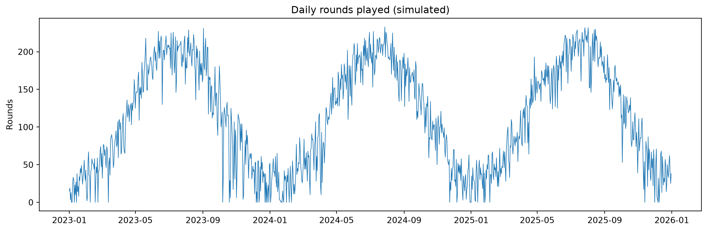
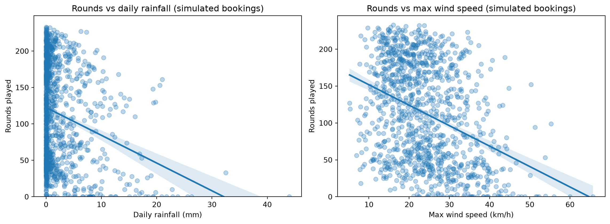
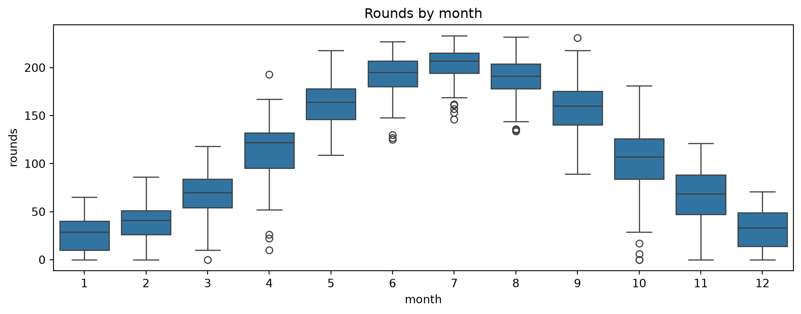
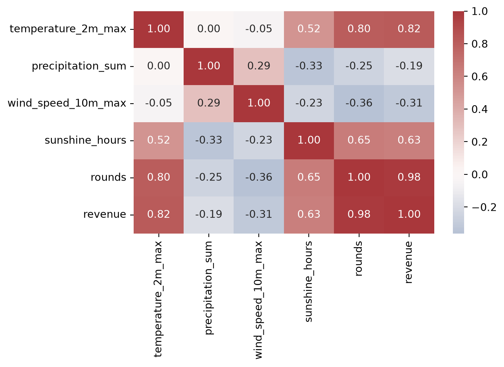
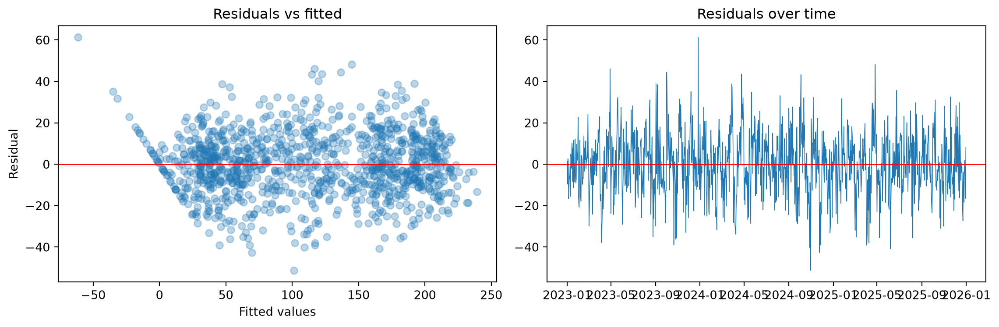

show code
import requests
import numpy as np
import pandas as pd
import matplotlib.pyplot as plt
import seaborn as sns
import statsmodels.formula.api as smfJuly 18, 2026
I work in golf operations at a links course in Scotland. Links golf is played on exposed coastal ground, and the operational folklore is unanimous: wind is the demand killer. Pricing conversations, discounting decisions, and staffing assumptions all lean on that belief.
I wanted to know whether the data agrees — and it turns out the honest answer requires being careful about seasonality, because wet, windy days cluster in exactly the months when nobody plays golf anyway.
Data transparency: the weather data below is real (Open-Meteo historical archive, St Andrews). The booking data is simulated — calibrated using my experience working in golf operations, with illustrative prices and capacities. The methodology mirrors a private analysis I ran on ~6 months of real daily operations data that I collected myself; that dataset isn’t published because it belongs to my employer. Everything below is fully reproducible.
Three years of daily weather for St Andrews from the Open-Meteo archive: maximum temperature, total rainfall, maximum wind speed, and sunshine hours.
url = "https://archive-api.open-meteo.com/v1/archive"
params = {
"latitude": 56.34,
"longitude": -2.79,
"start_date": "2023-01-01",
"end_date": "2025-12-31",
"daily": "temperature_2m_max,precipitation_sum,wind_speed_10m_max,sunshine_duration",
"timezone": "Europe/London",
}
r = requests.get(url, params=params, timeout=60)
weather = pd.DataFrame(r.json()["daily"])
weather["time"] = pd.to_datetime(weather["time"])
weather["sunshine_hours"] = weather["sunshine_duration"] / 3600
weather = weather.drop(columns=["sunshine_duration"])
weather.head()| time | temperature_2m_max | precipitation_sum | wind_speed_10m_max | sunshine_hours | |
|---|---|---|---|---|---|
| 0 | 2023-01-01 | 5.3 | 8.9 | 26.4 | 2.030117 |
| 1 | 2023-01-02 | 2.9 | 0.0 | 18.2 | 6.363992 |
| 2 | 2023-01-03 | 7.7 | 9.8 | 28.0 | 0.577408 |
| 3 | 2023-01-04 | 11.0 | 5.3 | 38.5 | 1.784658 |
| 4 | 2023-01-05 | 10.0 | 5.1 | 31.1 | 0.000000 |
The demand generator bakes in the structure you’d expect from a Scottish links course: strong summer seasonality, a weekend uplift, a rain penalty, a wind penalty that only bites above a threshold, a temperature effect, and noise. Revenue combines seasonal green fees with per-round ancillary spend.
rng = np.random.default_rng(42)
df = weather.copy()
# --- illustrative assumptions ---
BASE_ROUNDS = 120
SEASONAL_AMPLITUDE = 80
WEEKEND_UPLIFT = 15
RAIN_PENALTY = -3.5
WIND_THRESHOLD = 20
WIND_PENALTY = -1.2
TEMP_EFFECT = 1.5
# --------------------------------
day_of_year = df["time"].dt.dayofyear
seasonal = BASE_ROUNDS + SEASONAL_AMPLITUDE * np.sin((day_of_year - 105) / 365 * 2 * np.pi)
weekend = df["time"].dt.dayofweek.isin([5, 6]).astype(int) * WEEKEND_UPLIFT
rain = RAIN_PENALTY * df["precipitation_sum"]
wind = WIND_PENALTY * (df["wind_speed_10m_max"] - WIND_THRESHOLD).clip(lower=0)
temp = TEMP_EFFECT * (df["temperature_2m_max"] - 10)
noise = rng.normal(0, 12, len(df))
df["rounds"] = (seasonal + weekend + rain + wind + temp + noise).clip(lower=0).round()
green_fee = np.where(df["time"].dt.month.isin([5, 6, 7, 8, 9]), 150, 90)
ancillary = rng.normal(22, 5, len(df))
df["revenue"] = (df["rounds"] * green_fee + df["rounds"] * ancillary).round(2)
df[["rounds", "revenue"]].describe()| rounds | revenue | |
|---|---|---|
| count | 1096.000000 | 1096.000000 |
| mean | 112.857664 | 17139.789051 |
| std | 68.146323 | 12725.423166 |
| min | 0.000000 | 0.000000 |
| 25% | 50.000000 | 5652.857500 |
| 50% | 112.000000 | 12852.785000 |
| 75% | 176.000000 | 30200.777500 |
| max | 233.000000 | 42846.050000 |
Note what’s hidden in the generator: the true wind effect is a threshold effect — wind does nothing until it exceeds 20 km/h. That detail matters later.

fig, ax = plt.subplots(1, 2, figsize=(12, 4.5))
sns.regplot(data=df, x="precipitation_sum", y="rounds", ax=ax[0],
scatter_kws={"alpha": 0.3})
sns.regplot(data=df, x="wind_speed_10m_max", y="rounds", ax=ax[1],
scatter_kws={"alpha": 0.3})
ax[0].set_title("Rounds vs daily rainfall (simulated bookings)")
ax[0].set_xlabel("Daily rainfall (mm)")
ax[0].set_ylabel("Rounds played")
ax[1].set_title("Rounds vs max wind speed (simulated bookings)")
ax[1].set_xlabel("Max wind speed (km/h)")
ax[1].set_ylabel("Rounds played")
for a in ax:
a.set_ylim(bottom=0)
plt.tight_layout()
The raw scatter plots overstate weather effects: wet and windy days cluster in winter, when demand is low for seasonal reasons. Wind gets credit for damage the calendar is doing.
df["month"] = df["time"].dt.month
fig, ax = plt.subplots(figsize=(10, 4))
sns.boxplot(data=df, x="month", y="rounds", ax=ax)
ax.set_title("Rounds by month")
plt.tight_layout()
cols = ["temperature_2m_max", "precipitation_sum", "wind_speed_10m_max",
"sunshine_hours", "rounds", "revenue"]
fig, ax = plt.subplots(figsize=(7, 5))
sns.heatmap(df[cols].corr(), annot=True, fmt=".2f", cmap="vlag", center=0, ax=ax)
plt.tight_layout()

The model controls for month and weekend effects before asking what weather adds on the margin.
OLS Regression Results
==============================================================================
Dep. Variable: rounds R-squared: 0.952
Model: OLS Adj. R-squared: 0.951
Method: Least Squares F-statistic: 1338.
Date: Sat, 18 Jul 2026 Prob (F-statistic): 0.00
Time: 16:25:03 Log-Likelihood: -4517.2
No. Observations: 1096 AIC: 9068.
Df Residuals: 1079 BIC: 9153.
Df Model: 16
Covariance Type: nonrobust
======================================================================================
coef std err t P>|t| [0.025 0.975]
--------------------------------------------------------------------------------------
Intercept 38.2911 2.295 16.683 0.000 33.788 42.795
C(month)[T.2] 7.1269 2.281 3.124 0.002 2.651 11.603
C(month)[T.3] 34.0005 2.285 14.880 0.000 29.517 38.484
C(month)[T.4] 70.2865 2.446 28.730 0.000 65.486 75.087
C(month)[T.5] 104.2584 2.762 37.747 0.000 98.839 109.678
C(month)[T.6] 130.4373 3.012 43.306 0.000 124.527 136.347
C(month)[T.7] 141.1380 3.104 45.469 0.000 135.047 147.229
C(month)[T.8] 126.3043 3.105 40.679 0.000 120.212 132.397
C(month)[T.9] 102.1636 2.806 36.405 0.000 96.657 107.670
C(month)[T.10] 64.0519 2.474 25.889 0.000 59.197 68.907
C(month)[T.11] 32.1765 2.288 14.063 0.000 27.687 36.666
C(month)[T.12] 6.9524 2.237 3.108 0.002 2.564 11.341
precipitation_sum -2.9360 0.117 -25.031 0.000 -3.166 -2.706
wind_speed_10m_max -1.0288 0.057 -18.188 0.000 -1.140 -0.918
temperature_2m_max 2.5331 0.163 15.499 0.000 2.212 2.854
sunshine_hours 0.2582 0.131 1.970 0.049 0.001 0.515
is_weekend 14.5105 1.008 14.399 0.000 12.533 16.488
==============================================================================
Omnibus: 5.020 Durbin-Watson: 1.317
Prob(Omnibus): 0.081 Jarque-Bera (JB): 6.044
Skew: 0.034 Prob(JB): 0.0487
Kurtosis: 3.357 Cond. No. 451.
==============================================================================
Notes:
[1] Standard Errors assume that the covariance matrix of the errors is correctly specified.With seasonality controlled, every millimetre of rain costs about 3 rounds. Wind is significant here too — but the linear specification treats every km/h of wind equally, while the generator only penalises wind above a threshold. A specification that matches that mechanism:
OLS Regression Results
==============================================================================
Dep. Variable: rounds R-squared: 0.941
Model: OLS Adj. R-squared: 0.941
Method: Least Squares F-statistic: 1084.
Date: Sat, 18 Jul 2026 Prob (F-statistic): 0.00
Time: 16:25:03 Log-Likelihood: -4626.6
No. Observations: 1096 AIC: 9287.
Df Residuals: 1079 BIC: 9372.
Df Model: 16
Covariance Type: nonrobust
======================================================================================
coef std err t P>|t| [0.025 0.975]
--------------------------------------------------------------------------------------
Intercept 16.8653 2.138 7.888 0.000 12.670 21.061
C(month)[T.2] 6.3587 2.526 2.517 0.012 1.402 11.315
C(month)[T.3] 34.5603 2.538 13.616 0.000 29.580 39.541
C(month)[T.4] 73.5898 2.698 27.276 0.000 68.296 78.884
C(month)[T.5] 110.9545 3.020 36.740 0.000 105.029 116.880
C(month)[T.6] 135.6788 3.320 40.866 0.000 129.164 142.193
C(month)[T.7] 148.6919 3.396 43.782 0.000 142.028 155.356
C(month)[T.8] 131.8766 3.420 38.560 0.000 125.166 138.587
C(month)[T.9] 107.5144 3.086 34.841 0.000 101.459 113.569
C(month)[T.10] 66.3924 2.733 24.290 0.000 61.029 71.756
C(month)[T.11] 34.8217 2.527 13.777 0.000 29.862 39.781
C(month)[T.12] 6.4583 2.472 2.613 0.009 1.608 11.309
precipitation_sum -3.2378 0.128 -25.218 0.000 -3.490 -2.986
wind_excess -1.7547 0.201 -8.708 0.000 -2.150 -1.359
temperature_2m_max 2.1185 0.178 11.889 0.000 1.769 2.468
sunshine_hours 0.3463 0.145 2.393 0.017 0.062 0.630
is_weekend 14.8711 1.113 13.359 0.000 12.687 17.055
==============================================================================
Omnibus: 12.384 Durbin-Watson: 1.286
Prob(Omnibus): 0.002 Jarque-Bera (JB): 18.070
Skew: 0.084 Prob(JB): 0.000119
Kurtosis: 3.606 Cond. No. 245.
==============================================================================
Notes:
[1] Standard Errors assume that the covariance matrix of the errors is correctly specified.The threshold value here is illustrative; on real tee-sheet data, this is the specification you’d use to test whether wind bites only on the most extreme days — which is what my private analysis suggested: once seasonality was properly controlled, ordinary wind had no independent effect. On a links course, “it’s windy” is mostly just another way of saying “it’s November.”
What’s the rain effect worth? Using the rain coefficient and 2024’s actual rainfall:
rain_coef = abs(model.params["precipitation_sum"])
df["rain_lost_rounds"] = rain_coef * df["precipitation_sum"]
rev_per_round = 100 # illustrative blended revenue per round
recovery_rate = 0.25 # share of lost rounds recoverable via standby pricing
standby_discount = 0.6 # standby price as share of full price
annual = df[df["time"].dt.year == 2024]
lost = annual["rain_lost_rounds"].sum()
print(f"Estimated rounds lost to rain (2024): {lost:.0f}")
print(f"Estimated revenue at risk: £{lost * rev_per_round:,.0f}")
print(f"Recoverable via rain-triggered standby pricing: £{lost * recovery_rate * rev_per_round * standby_discount:,.0f}")Estimated rounds lost to rain (2024): 2521
Estimated revenue at risk: £252,089
Recoverable via rain-triggered standby pricing: £37,813And a sensitivity table, because the recovery assumptions are doing a lot of work:
rows = []
for rec in [0.10, 0.25, 0.40]:
for disc in [0.5, 0.6, 0.7]:
rows.append({"recovery_rate": rec, "standby_price_pct": disc,
"annual_recovery_£": round(lost * rec * rev_per_round * disc)})
pd.DataFrame(rows).pivot(index="recovery_rate", columns="standby_price_pct",
values="annual_recovery_£")| standby_price_pct | 0.5 | 0.6 | 0.7 |
|---|---|---|---|
| recovery_rate | |||
| 0.10 | 12604 | 15125 | 17646 |
| 0.25 | 31511 | 37813 | 44116 |
| 0.40 | 50418 | 60501 | 70585 |
The commercial conclusion is direction, not the specific numbers: price against the rain forecast, not the wind forecast — and if you discount windy days, you’re giving margin away on days that would have filled anyway.
fig, ax = plt.subplots(1, 2, figsize=(12, 4))
ax[0].scatter(model.fittedvalues, model.resid, alpha=0.3)
ax[0].axhline(0, color="red", lw=1)
ax[0].set_xlabel("Fitted values")
ax[0].set_ylabel("Residual")
ax[0].set_title("Residuals vs fitted")
ax[1].plot(df["time"], model.resid, lw=0.6)
ax[1].axhline(0, color="red", lw=1)
ax[1].set_title("Residuals over time")
plt.tight_layout()
Two things worth noticing. The residuals form a shapeless cloud around zero — roughly constant variance. But the Durbin–Watson statistic (~1.3) indicates positive autocorrelation: residuals on consecutive days share the same sign. Since the simulation’s noise is independent by construction, that autocorrelation is model misspecification — the month dummies approximate a smooth seasonal curve in steps, leaving slow-moving structure behind. A useful illustration of Durbin–Watson detecting unmodelled structure rather than noisy data.
There’s also a diagonal streak in the bottom-left of the residuals-vs-fitted plot: days where the model predicts negative rounds. Demand is censored at zero while a linear model is unbounded, so residuals land exactly on the line residual = −fitted. With many zero-demand days, a censored (Tobit) model would be more appropriate; here it’s confined to a handful of extreme winter days.
The regression is the easy part. The judgement calls are the parts nobody teaches: recognising that the raw correlations are confounded, choosing a specification that matches the mechanism you’re testing, and reading the diagnostics honestly instead of stopping at a big R². And the most useful finding — in the prxivate version of this analysis — was a null result: the variable everyone believed in did nothing once you controlled for the calendar.
---
title: "Does Wind Really Kill Golf Demand? Separating Weather from Seasonality"
date: 2026-07-18
categories: [python, statistics, research]
description: "Building a weather-to-revenue model for a links golf course — and why the obvious answer is confounded."
---
## The question
I work in golf operations at a links course in Scotland. Links golf is played
on exposed coastal ground, and the operational folklore is unanimous: wind is
the demand killer. Pricing conversations, discounting decisions, and staffing
assumptions all lean on that belief.
I wanted to know whether the data agrees — and it turns out the honest answer
requires being careful about seasonality, because wet, windy days cluster in
exactly the months when nobody plays golf anyway.
**Data transparency:** the weather data below is real (Open-Meteo historical
archive, St Andrews). The booking data is **simulated** — calibrated using my
experience working in golf operations, with illustrative prices and
capacities. The methodology mirrors a private analysis I ran on ~6 months of
real daily operations data that I collected myself; that dataset isn't
published because it belongs to my employer. Everything below is fully
reproducible.
```{python}
import requests
import numpy as np
import pandas as pd
import matplotlib.pyplot as plt
import seaborn as sns
import statsmodels.formula.api as smf
```
## Weather data
Three years of daily weather for St Andrews from the Open-Meteo archive:
maximum temperature, total rainfall, maximum wind speed, and sunshine hours.
```{python}
url = "https://archive-api.open-meteo.com/v1/archive"
params = {
"latitude": 56.34,
"longitude": -2.79,
"start_date": "2023-01-01",
"end_date": "2025-12-31",
"daily": "temperature_2m_max,precipitation_sum,wind_speed_10m_max,sunshine_duration",
"timezone": "Europe/London",
}
r = requests.get(url, params=params, timeout=60)
weather = pd.DataFrame(r.json()["daily"])
weather["time"] = pd.to_datetime(weather["time"])
weather["sunshine_hours"] = weather["sunshine_duration"] / 3600
weather = weather.drop(columns=["sunshine_duration"])
weather.head()
```
## Simulated bookings
The demand generator bakes in the structure you'd expect from a Scottish
links course: strong summer seasonality, a weekend uplift, a rain penalty, a
wind penalty that only bites above a threshold, a temperature effect, and
noise. Revenue combines seasonal green fees with per-round ancillary spend.
```{python}
rng = np.random.default_rng(42)
df = weather.copy()
# --- illustrative assumptions ---
BASE_ROUNDS = 120
SEASONAL_AMPLITUDE = 80
WEEKEND_UPLIFT = 15
RAIN_PENALTY = -3.5
WIND_THRESHOLD = 20
WIND_PENALTY = -1.2
TEMP_EFFECT = 1.5
# --------------------------------
day_of_year = df["time"].dt.dayofyear
seasonal = BASE_ROUNDS + SEASONAL_AMPLITUDE * np.sin((day_of_year - 105) / 365 * 2 * np.pi)
weekend = df["time"].dt.dayofweek.isin([5, 6]).astype(int) * WEEKEND_UPLIFT
rain = RAIN_PENALTY * df["precipitation_sum"]
wind = WIND_PENALTY * (df["wind_speed_10m_max"] - WIND_THRESHOLD).clip(lower=0)
temp = TEMP_EFFECT * (df["temperature_2m_max"] - 10)
noise = rng.normal(0, 12, len(df))
df["rounds"] = (seasonal + weekend + rain + wind + temp + noise).clip(lower=0).round()
green_fee = np.where(df["time"].dt.month.isin([5, 6, 7, 8, 9]), 150, 90)
ancillary = rng.normal(22, 5, len(df))
df["revenue"] = (df["rounds"] * green_fee + df["rounds"] * ancillary).round(2)
df[["rounds", "revenue"]].describe()
```
Note what's hidden in the generator: the *true* wind effect is a threshold
effect — wind does nothing until it exceeds 20 km/h. That detail matters
later.
## Exploration
```{python}
fig, ax = plt.subplots(figsize=(12, 4))
ax.plot(df["time"], df["rounds"], lw=0.7)
ax.set_title("Daily rounds played (simulated)")
ax.set_ylabel("Rounds")
plt.tight_layout()
```
```{python}
fig, ax = plt.subplots(1, 2, figsize=(12, 4.5))
sns.regplot(data=df, x="precipitation_sum", y="rounds", ax=ax[0],
scatter_kws={"alpha": 0.3})
sns.regplot(data=df, x="wind_speed_10m_max", y="rounds", ax=ax[1],
scatter_kws={"alpha": 0.3})
ax[0].set_title("Rounds vs daily rainfall (simulated bookings)")
ax[0].set_xlabel("Daily rainfall (mm)")
ax[0].set_ylabel("Rounds played")
ax[1].set_title("Rounds vs max wind speed (simulated bookings)")
ax[1].set_xlabel("Max wind speed (km/h)")
ax[1].set_ylabel("Rounds played")
for a in ax:
a.set_ylim(bottom=0)
plt.tight_layout()
```
The raw scatter plots overstate weather effects: wet and windy days cluster
in winter, when demand is low for seasonal reasons. Wind gets credit for
damage the calendar is doing.
```{python}
df["month"] = df["time"].dt.month
fig, ax = plt.subplots(figsize=(10, 4))
sns.boxplot(data=df, x="month", y="rounds", ax=ax)
ax.set_title("Rounds by month")
plt.tight_layout()
cols = ["temperature_2m_max", "precipitation_sum", "wind_speed_10m_max",
"sunshine_hours", "rounds", "revenue"]
fig, ax = plt.subplots(figsize=(7, 5))
sns.heatmap(df[cols].corr(), annot=True, fmt=".2f", cmap="vlag", center=0, ax=ax)
plt.tight_layout()
```
## The regression
The model controls for month and weekend effects before asking what weather
adds on the margin.
```{python}
df["is_weekend"] = df["time"].dt.dayofweek.isin([5, 6]).astype(int)
model = smf.ols(
"rounds ~ precipitation_sum + wind_speed_10m_max + temperature_2m_max "
"+ sunshine_hours + is_weekend + C(month)",
data=df,
).fit()
print(model.summary())
```
With seasonality controlled, every millimetre of rain costs about 3 rounds.
Wind is significant here too — but the linear specification treats every
km/h of wind equally, while the generator only penalises wind above a
threshold. A specification that matches that mechanism:
```{python}
df["wind_excess"] = (df["wind_speed_10m_max"] - 35).clip(lower=0)
model2 = smf.ols(
"rounds ~ precipitation_sum + wind_excess + temperature_2m_max "
"+ sunshine_hours + is_weekend + C(month)",
data=df,
).fit()
print(model2.summary())
```
The threshold value here is illustrative; on real tee-sheet data, this is
the specification you'd use to test whether wind bites only on the most
extreme days — which is what my private analysis suggested: once
seasonality was properly controlled, ordinary wind had no independent
effect. On a links course, "it's windy" is mostly just another way of
saying "it's November."
## Revenue impact
What's the rain effect worth? Using the rain coefficient and 2024's actual
rainfall:
```{python}
rain_coef = abs(model.params["precipitation_sum"])
df["rain_lost_rounds"] = rain_coef * df["precipitation_sum"]
rev_per_round = 100 # illustrative blended revenue per round
recovery_rate = 0.25 # share of lost rounds recoverable via standby pricing
standby_discount = 0.6 # standby price as share of full price
annual = df[df["time"].dt.year == 2024]
lost = annual["rain_lost_rounds"].sum()
print(f"Estimated rounds lost to rain (2024): {lost:.0f}")
print(f"Estimated revenue at risk: £{lost * rev_per_round:,.0f}")
print(f"Recoverable via rain-triggered standby pricing: £{lost * recovery_rate * rev_per_round * standby_discount:,.0f}")
```
And a sensitivity table, because the recovery assumptions are doing a lot
of work:
```{python}
rows = []
for rec in [0.10, 0.25, 0.40]:
for disc in [0.5, 0.6, 0.7]:
rows.append({"recovery_rate": rec, "standby_price_pct": disc,
"annual_recovery_£": round(lost * rec * rev_per_round * disc)})
pd.DataFrame(rows).pivot(index="recovery_rate", columns="standby_price_pct",
values="annual_recovery_£")
```
The commercial conclusion is direction, not the specific numbers: price
against the rain forecast, not the wind forecast — and if you discount
windy days, you're giving margin away on days that would have filled anyway.
## Model validation
```{python}
fig, ax = plt.subplots(1, 2, figsize=(12, 4))
ax[0].scatter(model.fittedvalues, model.resid, alpha=0.3)
ax[0].axhline(0, color="red", lw=1)
ax[0].set_xlabel("Fitted values")
ax[0].set_ylabel("Residual")
ax[0].set_title("Residuals vs fitted")
ax[1].plot(df["time"], model.resid, lw=0.6)
ax[1].axhline(0, color="red", lw=1)
ax[1].set_title("Residuals over time")
plt.tight_layout()
```
Two things worth noticing. The residuals form a shapeless cloud around zero
— roughly constant variance. But the Durbin–Watson statistic (~1.3)
indicates positive autocorrelation: residuals on consecutive days share the
same sign. Since the simulation's noise is independent by construction,
that autocorrelation is model misspecification — the month dummies
approximate a smooth seasonal curve in steps, leaving slow-moving structure
behind. A useful illustration of Durbin–Watson detecting unmodelled
structure rather than noisy data.
There's also a diagonal streak in the bottom-left of the residuals-vs-fitted
plot: days where the model predicts *negative* rounds. Demand is censored
at zero while a linear model is unbounded, so residuals land exactly on the
line residual = −fitted. With many zero-demand days, a censored (Tobit)
model would be more appropriate; here it's confined to a handful of extreme
winter days.
## What building this taught me
The regression is the easy part. The judgement calls are the parts nobody
teaches: recognising that the raw correlations are confounded, choosing a
specification that matches the mechanism you're testing, and reading the
diagnostics honestly instead of stopping at a big R². And the most useful
finding — in the prxivate version of this analysis — was a null result: the
variable everyone believed in did nothing once you controlled for the
calendar.